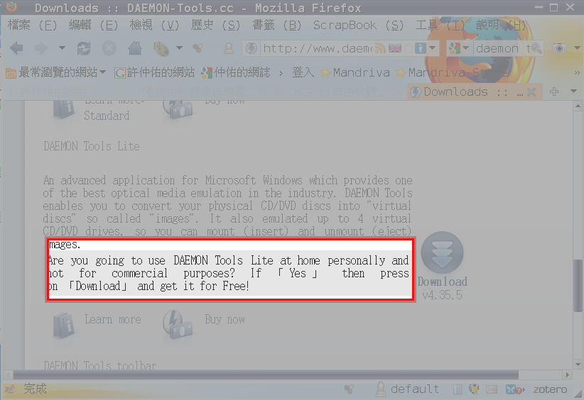

WinCDEmu 自由軟體界的虛擬光碟系統

近日在跟老師分享一些特殊課題時，會需要用到虛擬光碟系統。
講到虛擬光碟時，大家便自然而然地想到 Daemon Tools 這支程式，當然我也是，甚至還裝載在學校的電腦教室裡。
但是因為課程需要，想說要嘛就提供學員最新版的程式，以表示我的誠意，於是便連到了 Daemon Tools 的官方網站的下載頁，在習慣性的看了一下他的注意事項後，不禁冒出了冷汗，原來我又在不小心之下，又讓了自己走在法律的邊緣上。

大家可以很清楚的看到，本軟體 lite 版 主要是家用及非商業使用的有限免費軟體授權。
今天我放在學校的電腦教室裡，學校電腦教室的電腦雖然不是用在商業用途，但很明顯絕對不是家用，日後「萬一」起糾紛了，說真的難辭其咎呀。（況且這年頭什麼怪事都會出現啦）
與其如此尷尬，乾脆就不用了，求個心安也好。
我才不要以一句「我沒有辦法，我沒有選擇」等等的說詞來瞞騙自己的心。
還好，我發現了另一個對我來說，更帥的虛擬光碟軟體：WinCDEmu，真正的自由軟體啦！
安裝，操作等都超簡單。
先說安裝，算算安裝時間，大約 20 秒，而且不用重新開機。（Daemon Tools 還得先重新開一次，然後才能繼續往下裝）
操作部份，只要對著目標 ISO 檔案點兩下，便會自動掛載起來，變成一部虛擬光碟機了。
此時，你也可以在裝置管理員的地方看到有虛擬裝置出現了。
那～要卸載光碟機怎麼辦？
呃～只要到我的電腦或是檔案總管，對著該虛擬光碟機按滑鼠右鍵，選退出，便卸載了。
目前版本號碼是：Version 3.0 ，可以跑在 Windows 7 上。
可以支援的光碟格式有： ISO, CUE, NRG, MDS/MDF, CCD, IMG formats. （我竟然只認識 ISO, 以及 NRG, 果然我是孤陋寡聞的單細胞動物呀！）
補充說明：(資料來源，中文維基)
ISO 9660，被一些硬體和軟體供應商稱作CDFS（光碟檔案系統），是一個由國際標準化組織（ISO）為光碟媒介發佈的檔案系統。其目的是能夠在不同的作業系統，如 Windows，Mac OS 以及 Unix-like 系統上交換資料。
ISO 9660 源於 High Sierra 檔案系統。High Sierra 透過使用一種分層樹（共八層）檔案系統，以一種密集的、順序的佈局來組織檔案資訊，類似於 UNIX 和 FAT。為了增強跨平台相容性，它定義了一個常用檔案屬性（目錄或原始檔案以及記錄時間）和名稱屬性（檔名，副檔名，版本）的最小子集，並且使用一個單獨的系統區域來相容未來的擴充套件屬性。
High Sierra 在 1986 年 12 月被 Ecma 國際採用（作了一些改動）而成為了國際標準，即 ECMA-119[1]，並提交給國際標準化組織而成為 ISO 9660:1988。目前，ISO 9660 檔案系統正在被行業廣泛使用。
總之，iso 格式是國際組織所發展出來的標準格式，而非廠商為公司的特定軟體所打造的私有格式，因此共通性更高，且不會被軟體所束縛住。
目前的支援的語言有：English, Russian and Japanese, 正體中文（呃～這是我翻譯的，真是不好意思咩！）
想要使用正體中文介面的人，請到獅湖國小 FTP 網站去下載語系檔，及看一下 readme.txt 檔。
超酷吧！真是值得大家一起愛用！
不過我的心得是：
唉，MS Windows 的用戶好可憐，用個軟體這邊缺那邊少的，而且還不時有觸法之虞。
平常悠遊在 unix-like 世界中的我，真的越來越難想像 MS Windows 世界的人是如何過日子的。
在 unix-like 的世界中早就有許多強又有力的工具，早晾在那邊等人，歡迎人，儘量拿去用，根本就不用擔心法律的問題。
例如以虛擬光碟功能而言，在 unix-like 世界中，這本來就是系統該具備有的基本功能，但在 MS Windows 中，卻得要千尋萬覓的，而好不容易找到自由軟體版本的，大家高興的好像走在路上撿到錢一樣。
真是令我匪夷所思與一連串的無言啦……（烏鴉該你出場啦……）
◎作者簡介
許仲佑 (Chung-Yu Hsu)，國小專任教師，熱愛文史，更愛自由。目前正致力於自由軟體的推動。
作者Blog